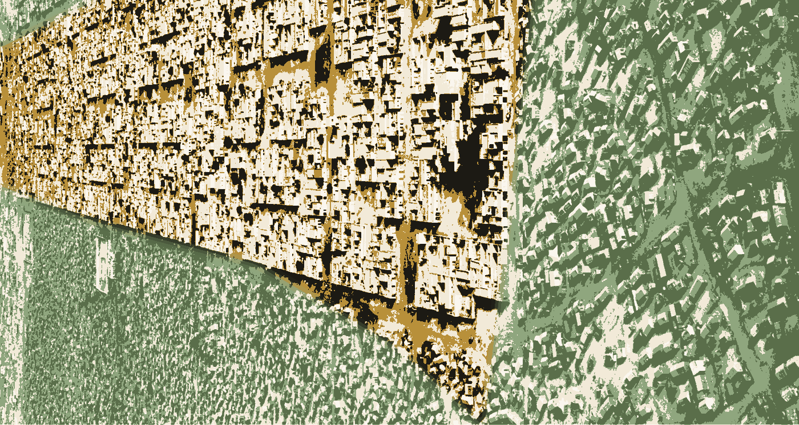

Note d'édition (2024) : le document original de 1996 utilisait un système de fusion de mots (mail merge) pour insérer certains mots-clés et les titres de la bibliographie ; une partie de ces liens internes s'est perdue au fil des transferts de logiciels et de formats. Le texte ci-dessous a été relu et reconstitué avec le plus grand soin à partir de ce qui subsistait, mais quelques très courtes formules d'origine n'ont pu être retrouvées et ont été légèrement rajustées pour préserver la fluidité de la lecture.
Insuffler de la vie dans les réseaux
Afin de mieux cerner le rôle et le fonctionnement des OTOroutes de l'information dans la communication humaine, explorons quelques idées qui se sont développées autour du paradigme réseau, de l'auto-organisation de la vie et du concept d'esprit (mind).
Ces concepts, issus de la science du complexe, supportent la vision des réseaux comme un média convivial par lequel chacun pourra, à l'image de la vie, exercer et partager sa créativité, et ainsi raconter de multiples façons ses nombreuses histoires, comme le dit Sherry Turkle.
Le réseau comme média
Grâce à la convergence des hypermédias1 et des réseaux, nous serons bientôt ensemble en immersion totale dans un espace symbolique. À l'aide des médias personnels (les micro-ordinateurs) et interpersonnels (quand les micro-ordinateurs sont branchés à des réseaux), on va créer de toute pièce la réalité virtuelle, organiser le cyberespace, habiter et construire le village global. Cette pratique collective donne naissance à la culture réseau. En croisant le slogan de la compagnie Sun, « The network is the computer », avec McLuhan, nous pouvons dire : « Le réseau est le média. »
Esprit et technologie
Mais toute cette belle technologie sans vie a besoin de la vie bactérienne des humains pour prendre forme.
Une branche de la science tente depuis trente ans de formuler une vision unifiée de la matière, de la vie et de l'esprit. C'est dans le contexte de l'intégration des découvertes de la cybernétique et de la théorie de l'information au domaine du vivant et des humains que Gregory Bateson a développé le concept d'esprit.
Selon cette approche, l'esprit, cette forme d'intelligence, est immanent à toute organisation suffisamment complexe. Ces organisations complexes sont pour la plupart distribuées, ou composées de parties en interaction dans des réseaux. Un système de communication très évolué, voire intelligent, supporte et structure ce type d'organisation. Les nouvelles technologies de l'information et de communication (NTIC), qui se sont développées dans ce contexte intellectuel, outillent aujourd'hui l'intelligence humaine. Ainsi, nous devenons une construction à double hélice qui s'entrecroise : la vie engendre la technologie, la technologie imite la vie.
Ces deux grandes tendances se retrouvent en intelligence artificielle. Une première imite l'intelligence humaine pour éventuellement la remplacer, tandis que la seconde vise à l'assister et à l'amplifier à l'aide de nouveaux outils de création et de communication — ce que Pierre Lévy nomme les technologies intellectuelles. Bien que la première approche puisse générer des retombées positives, la seconde semble beaucoup plus conviviale et agréable à notre humanisme anthropocentrique. Mais leurs résultats combinés feront que de plus en plus d'humains se coupleront à ces technologies intellectuelles pour former des réseaux d'intelligence et donner vie à une culture réseau.
Les réseaux conviviaux
Le concept de réseau convivial définit un rassemblement ou un croisement de personnes qui utilisent ces nouvelles technologies de l'information et de communication dans un contexte où ces technologies sont « conductrices de sens » et laissent la plus grande autonomie d'utilisation et « le plus grand pouvoir de modifier le monde » à ces personnes. Le réseau convivial ajoute de la virtualité aux communautés réelles et donne vie aux communautés virtuelles. Le réseau convivial est aussi le lieu physique et symbolique où le réseau humain s'interconnecte à deux autres réseaux de nature différente mais complémentaire : les réseaux sémantiques et les réseaux technologiques. Le tout forme un seul univers numérique que différents termes nomment et définissent : cyberespace, réalité virtuelle, village global, dont les OTOroutes tissent les liens et constituent la trame de fond, le système nerveux.
La convivialité se nourrit de la philosophie qui s'est développée parallèlement à la mise au point des micro-ordinateurs — ces ordinateurs personnels devenus interpersonnels avec la multiplication des babillards électroniques et l'universalisation du réseau Internet. Dans le contexte technologique, le mot convivial est souvent utilisé comme la traduction française de l'expression américaine « user-friendly ». Mais au-delà de ce sens technique, proche de la manière de l'usager, ce mot comporte un sens politique, surtout depuis la publication du livre d'Ivan Illich, La convivialité.
Le mot convivialité peut se traduire par « avec la vie » ou « proche de la vie », et exprime le principe associatif de la vie. Cette vie associative se retrouve au cœur des réseaux humains qui forment la société conviviale. « Une société conviviale est une société qui donne à l'homme la possibilité d'exercer l'action la plus autonome et la plus créative, à l'aide d'outils moins contrôlables par autrui », écrit Ivan Illich*.
Le réseau devient ainsi la métaphore pour décrire et comprendre la communication conviviale. Les réseaux permettent aux affinités électives de Goethe de se ramifier. Celui-ci écrivait d'ailleurs que « rien ne se produit dans la nature vivante qui ne soit en relation avec le tout ». Voilà le sens global du paradigme réseau, de la nature vivante des réseaux, de leur logique particulière.
Rêver un média de rêve pour créer du sens, de l'esprit
Rêvons ce que serait une société de communication, et imaginons le rôle que joueraient les technologies dans l'émergence de cette société — sans oublier que si les NTIC jouent un rôle primordial dans la communication moderne, il reste tout de même au centre de la communication le jeu essentiel des acteurs, ces êtres vivants qui, dans leurs interrelations, renouvellent sans cesse le jeu de la communication.
Les NTIC supportent les potentialités culturelles et sociales du paradigme réseau. Elles augmentent les possibilités d'actions socioculturelles des multimédias et des réseaux. Ces technologies entrent dans une phase où le vivant devient le modèle, la métaphore universelle pour repenser notre monde. Pour répondre à la crise des hiérarchies, voilà l'avènement des réseaux.
Ainsi le mouvement culturel réseau prend son sens au carrefour d'outils et de valeurs qui relient le global et le local, le solitaire et le solidaire, la technologie et l'humain. Cette culture vise entre autres à passer d'une société pensée et gérée par les institutions à une société vécue et inventée par les individus, en collaboration et par engagement envers la vie. La vie, qui par sa nature est associative, trouve dans la vie associative des humains un prolongement à son mode de fonctionnement.
Ce mouvement culturel est en cours d'expérience, c'est un « work in progress », et « dans cinq ans, nous saurons si les réseaux conviviaux (civic networks) auront servi de modèle à une société autogouvernée, ou s'ils furent simplement le rêve d'un monde que nous aurions pu construire2 ».
Réseau et écologie de la vie et de l'esprit
Alors que pour la plupart des gens la notion de réseau suggère des considérations technologiques — le réseau de télévision, le réseau routier, le réseau Internet — la notion de réseau est aujourd'hui de plus en plus associée aux phénomènes de la vie.
« … scientists then realized that the network pattern is not only true of ecological communities but of every member of that community. Every organism is a network of organs, of cells, of various components; and every cell is a network of smaller components. So what you have is networks within networks. Whenever you look at life, you look at networks. » Fritjof Capra, conférence « Ecology and Community »
Les phénomènes d'organisation et de communication, sources de l'intelligence tant au niveau physique, biologique que social, sont souvent décrits à l'aide de la notion de réseau. Cette notion peut nous servir de fil conducteur pour saisir des phénomènes aussi différents que la cognition, l'auto-organisation de la culture ou l'organisation sociale — ou simplement la vie. Dans un monde de plus en plus complexe, les réseaux, comme forme d'organisation propre à la vie, commencent à inspirer les constructions humaines les plus diverses. L'émergence des nouvelles technologies dans nos vies et l'importance croissante des médias dans nos sociétés donnent à la notion de réseau encore plus d'importance, particulièrement pour les productions de l'esprit.
Un réseau dans un réseau, dans un réseau…
« Since living systems at all levels are networks, we must visualize the web of life as living systems (networks) interacting in network fashion with other systems (networks). For example, we can picture an ecosystem schematically as a network with a few nodes. Each node represents an organism, which means that each node, when magnified, appears itself as a network. » Fritjof Capra, The Web of Life, 1996, p. 35
Abordons rapidement cinq aspects qui définissent le paradigme réseau ainsi que le mouvement culturel réseau auquel il donne naissance.
1. L'aspect épistémologique et les réseaux comme métaphore
La théorie de l'information, la cybernétique et l'auto-organisation sont les approches scientifiques qui donnent naissance au concept d'information. Celle-ci permet les multiples liens dont sont faits les réseaux. Comme l'écrit un de ses étudiants, c'est cette vision réticulaire du monde que Gregory Bateson professait :
« The principal skill he (Bateson) taught was: to see the world not as a collection of things or persons, but a network of relationship, that network bound together by communication. This way of seeing is not an abstraction, but a tangible experience that can be cultivated by practice. It is, in itself, one of the answers to the deep crisis of mind that bedevils our civilization. » Stephen Nachmanovitch, Coevolution Quarterly n° 35, automne 19823
Ainsi Bateson a tiré un lien entre le phénomène global de l'évolution et une des principales manifestations de l'intelligence : l'apprentissage.
2. L'aspect scientifique, ou les réseaux comme explication du monde et de la vie
Cette métaphore découle en grande partie d'un courant scientifique qui donne naissance à l'écologie. Écologie et réseau deviennent synonymes : « Ecology is networks. To understand ecosystems ultimately will be to understand networks » (Capra, 1996, p. 35).
Ainsi les écosystèmes sont des réseaux de vie. De plus, la science elle-même peut être comprise comme un réseau de connaissances :
« In the new systems thinking, the metaphor of knowledge as a building is being replaced by that of the network. As we perceive reality as a network of relationships, our descriptions, too, form an interconnected network of concepts and models in which there are no foundations. For most scientists such a view of knowledge as a network with no firm foundations is extremely unsettling, and today it is by no means generally accepted. But as the network approach expands throughout the scientific community, the idea of knowledge as a network will undoubtedly find increasing acceptance.
The notion of scientific knowledge as a network of concepts and models, in which no part is any more fundamental than the others, was formalized in physics by Geoffrey Chew in his "bootstrap philosophy" in the 1970s. The bootstrap philosophy not only abandons the idea of fundamental building blocks of matter, it accepts no fundamental entities whatsoever — no fundamental constants, laws, or equations. The material universe is seen as a dynamic web of interrelated events. None of the properties of any part of this web is fundamental; they all follow from the properties of the other parts, and the overall consistency of their interrelations determines the structure of the entire web. When this approach is applied to science as a whole, it implies that physics can no longer be seen as the most fundamental level of science. Since there are no foundations in the network, the phenomena described by physics are not any more fundamental than those described by, say, biology or psychology. They belong to different systems levels, but none of those levels is any more fundamental than the others. » Fritjof Capra, The Web of Life, p. 39
3. L'aspect culturel, ou le réseau comme processus collectif d'interprétation et de création de sens
Ce processus de création de nœuds de contenu et de liens signifiants est supporté par des technologies intellectuelles de plus en plus efficaces, telles l'hypertexte et les hypermédias — ces technologies elles-mêmes fondées sur une construction organique en réseau. Le développement de contenu sur le World Wide Web nous donne un exemple probant de ce processus. Au début, cette création anarchique donne l'impression d'être désorganisée, puisque nous sommes culturellement habitués à consulter de l'information toute mâchée et refermée sur elle-même. Mais les réseaux aident à organiser le chaos de la création et de la communication ; à l'aide de la fonction de rétroaction exercée par chacun, le contenu s'organise, s'articule à l'aide de multiples liens. La notion d'œuvre ouverte définie par Umberto Eco sert souvent de phare pour éclairer ce processus culturel. Mais maintenant l'œuvre n'est plus seulement ouverte à l'interprétation du sens par son lecteur : elle devient également un élément d'un mouvement réticulaire de cocréation du sens.
« Because you have feedback in networks, because an influence travels around a loop and comes back to you, you can have self-regulation — not only self-regulation, but self-organization. » Fritjof Capra, conférence, 1994
La culture humaine devient ainsi un complexe informationnel-organisationnel vivant, comme la définit Edgar Morin. Les réseaux sémantiques sont le produit de processus culturels.
4. L'aspect psychosocial, ou le réseau comme structure de communication et d'organisation : le réseau humain
Il s'agit d'un champ de recherche en communication déjà bien établi, particulièrement depuis le livre de Rogers et Kincaid, Communication Networks: Toward a New Paradigm for Research (1981) : les deux auteurs, inspirés par la cybernétique, le concept d'information et la pensée de Bateson, y proposent un modèle convergent de communication dans lequel l'information circule dans les réseaux humains pour parvenir à une compréhension collective, à un bagage culturel que tous partagent et cultivent comme un jardin communautaire.
Mais le développement psychosocial des réseaux prend deux directions divergentes. D'une part, on le propose comme une nouvelle orientation pour les organisations socio-économiques ; en même temps, il se présente comme une alternative à ce même modèle.
« The classic Western model of the individual as an autonomous, inward-looking entity is relinquished in favour of a hybridized, networked subjectivity, within which we are forced to perceive ourselves as dynamic nodes in a social network of communication. » Stocker
4.1 — Le réseau vu comme une alternative sociale
Marilyn Ferguson et le mouvement culturel de la côte ouest américaine ont vu dans le réseau le mode d'organisation le mieux adapté comme alternative au fonctionnement social dominant en Occident : « ce mode organique d'organisation sociale s'adapte mieux biologiquement4 ». Suivant la dynamique des vivants, l'organisation jaillit de l'interaction de tous, dans une sorte de vie associative.
4.2 — Le réseau comme modèle socio-économique
Le nombre de livres publiés sur la notion de réseau et le management dans les dernières années marque l'intérêt croissant pour ce type de structure, souvent vu comme une solution au « big bang » des organisations. De plus, les grandes institutions financières ne possèdent-elles pas les réseaux technologiques les plus développés ? Avec la globalisation des marchés, les riches propriétaires développent des stratégies de maillage et de connivence pour que le changement de situation leur soit le plus profitable. En effet, à court terme, il est plus facile de constituer un petit réseau de gens bien outillés et bien informés, dont les objectifs sont clairs et précis. Mais on peut croire que lorsque la pratique des réseaux et des outils conviviaux qui la soutiennent se sera répandue, le maillage et la connivence atteindront d'autres groupes dont les objectifs sont plus complexes.
5. L'aspect technologique, où le réseau devient le plus concret : les réseaux de radio, de télévision, ou encore le réseau Internet
Le mot réseau désigne ici des supports physiques très utilisés dans les communications électroniques et informatiques. Dans un numéro de la revue Byte célébrant les quinze ans du micro-ordinateur, Alan Kay, une des têtes pensantes de la micro-informatique, prédit que la troisième révolution informatique, après le temps partagé et les interfaces graphiques, sera celle des réseaux (networking) : « The third revolution that is going to come is one that is driven by networking — it's a pervasive technology — and I call it the intimate revolution. »
L'évolution des domaines de la micro-informatique amplifiera et outillera le personnel, et l'unifiera à l'interpersonnel dans des réseaux conviviaux. En effet, si depuis l'arrivée de l'ordinateur personnel celui-ci a souvent été isolé sur le bureau d'un individu, il sera de plus en plus connecté avec d'autres ordinateurs — ceux de ses collègues de travail dans des réseaux locaux, ceux de l'organisation dans des réseaux d'entreprise. Il sera aussi branché sur des réseaux régionaux, puis sur les grands réseaux nationaux et internationaux, pour accéder et partager l'information de toute nature. Il est possible de prévoir qu'un jour tous les ordinateurs seront reliés entre eux, jouant à la fois le rôle de client et de serveur, car les ordinateurs personnels possèdent déjà les capacités de jouer un rôle plus important dans la constitution des réseaux. L'invention de l'ordinateur de réseau qui ne serait qu'un simple récepteur ferait bien l'affaire des diffuseurs d'information, qui consolideraient ainsi le contrôle du contenu tout en s'assurant des revenus toujours plus importants. Si le prix de ces ordinateurs peut favoriser l'accès du plus grand nombre aux réseaux, ses effets pervers nous ramèneraient au temps de la radio et de la télévision, alors que les réseaux ne véhiculaient l'information que dans un sens.
La notion de réseau convivial s'inspire de l'approche ouverte dans laquelle chaque participant, avec son ordinateur, devient un nœud dans l'enchevêtrement des réseaux humains, sémantiques et technologiques, en misant d'abord sur la nature vivante de ces réseaux. Les capacités organisatrices de tels réseaux en font des systèmes hypercomplexes, dont Morin5 décrit les effets :
- augmenter les aptitudes organisationnelles, notamment les aptitudes au changement ;
- organiser de la diversité dans des conditions de plus en plus désorganisatrices.
Le réseau permet ainsi de :
- développer des communications et des communautés avec autrui ;
- développer des relations et interactions avec l'environnement ;
- développer des processus à la fois complémentaires, concurrents et antagonistes ;
- développer des qualités intellectuelles, notamment l'aptitude à apprendre, l'aptitude à élaborer des stratégies, l'aptitude à inventer et à créer.
Voyons maintenant ce que sont ces différents réseaux — humains, sémantiques et technologiques — qui finissent par ne faire qu'un et former un esprit.
Réseau d'intelligence et réseaux intelligents
Des réseaux d'intelligence s'organisent depuis toujours dans l'univers ; ainsi l'évolution peut être comprise comme un réseau d'intelligence. Dans ces réseaux d'intelligence, « la cognition n'est plus considérée comme un royaume mental, mais comme un modèle de comportement qui est pertinent pour le fonctionnement de la personne ou de l'organisme dans son milieu6 ». Comme ces personnes et ces organismes vivent en société, la cognition devient un phénomène collectif.
« I think the ultimate possibility of computerized conferencing is to provide a way for human groups to exercise a "collective intelligence" capability. The computer as a device to allow a human group to exhibit collective intelligence is a rather new concept. In principle, a group, if successful, would exhibit an intelligence higher than any member. Over the next decades, attempts to design computerized conferencing structures that allow a group to treat a particular complex problem with a single collective brain may well promise more benefit for mankind than all the artificial intelligence work to date. » Murray Turoff, 1976, p. 1827
Précurseur du mouvement de l'amplification de l'intelligence, Murray Turoff, dans son livre The Network Nation, paru pour la première fois en 1978, met sur la carte technologique l'idée de réseaux dotés d'outils informatiques pour amplifier la communication humaine — c'est-à-dire notre intelligence collective.
Comme nous l'écrivions au début, l'intelligence est à l'œuvre depuis toujours dans l'univers ; elle se manifeste entre autres dans le processus de l'évolution, qui fait jaillir le complexe du simple. De façon aussi étonnante que la matière inerte, en s'organisant, peut produire la vie, la vie, en se complexifiant, produit l'intelligence et l'esprit. Avec l'arrivée de l'homo sapiens sapiens, une intelligence consciente se met à l'œuvre. Les technologies modernes sont le fruit d'une forme d'évolution, d'une étape importante dans l'épanouissement de l'intelligence, et surtout de cette nouvelle vision de l'émergence d'une intelligence collective. Nous croyons, comme le prétend McLuhan, que les technologies ont toujours été une extension des possibilités humaines, et qu'elles le sont de plus en plus aujourd'hui. Un jour peut-être deviendront-elles l'extension de la conscience, mais pour l'instant elle reste l'apanage des humains, même si l'ordinateur Deep Blue a battu le meilleur joueur d'échecs au monde.
Pourtant, « nous approchons rapidement de la phase finale des prolongements de l'homme : la simulation technologique de la conscience. Dans cette phase, le processus créateur s'étendra collectivement à l'ensemble de la société humaine8 ». Ainsi McLuhan, le visionnaire, nous convie à participer à ce processus, non en tant que participant exceptionnel et génial, mais en tant que membre ordinaire de la société humaine.
Pour parvenir à cette étape utopique de la création consciente de la noosphère, il faut combiner l'intelligence formelle que l'on a réussi à imiter avec les technologies, et les autres aspects plus poétiques de l'esprit. Pour ce faire, nous pouvons coupler réseau d'intelligence et réseaux intelligents. Le singulier du premier terme marque la filiation à un principe unique, toujours en développement par l'interconnexion des milliards d'individus qui ont traversé les temps. Si nous sommes porteurs de notre propre intelligence, celle-ci se tisse et s'accumule à l'intérieur d'une même sphère que Teilhard de Chardin a nommée la noosphère.
« Teilhard saw the Net coming more than half a century before it arrived. He believed this vast thinking membrane would ultimately coalesce into "the living unity of a single tissue" containing our collective thoughts and experiences. In his magnum opus, The Phenomenon of Man, Teilhard wrote, "Is this not like some great body which is being born — with its limbs, its nervous system, its perceptive organs, its memory — the body in fact of that great living Thing which had to come to fulfill the ambitions aroused in the reflective being by the newly acquired consciousness?" What Teilhard was saying here can easily be summed up in a few words, says John Perry Barlow: "The point of all evolution up to this stage is the creation of a collective organism of Mind." » Jennifer Cobb Kreisberg, « A Globe, Clothing Itself with a Brain », Wired 3.06, juin 19959
Une croyance très répandue veut que l'esprit soit le résultat des réactions chimiques et physiologiques du cerveau, et que cet esprit soit localisé dans un endroit et un temps bien précis. Pourtant, dans le cadre de l'intégration des principes de la cybernétique et du concept d'information au domaine de la vie et des humains, Gregory Bateson a ouvert le concept d'esprit (mind).
Les conceptions de Bateson étaient un plaidoyer en faveur de l'esprit immanent, c'est-à-dire du processus mental qui se produit à l'intérieur de structures physiques d'une complexité appropriée. Même en les voyant comme structures physiques, nous ne pouvons décrire ce qui se passe dans les organismes, les sociétés ou les écosystèmes sans penser en termes de communication, d'organisation, de réaction à des différences — c'est-à-dire en termes de tous ces phénomènes que Bateson décrivait comme mentaux10.
Les structures physiques à l'intérieur desquelles le processus mental se produit sont organisées en réseaux. Ainsi, organisation physique et organisation biologique sont intimement liées dans ce processus mental ; elles forment à la fois un tout et un continuum.
Le premier critère distinctif du processus mental, expliquait-il, est d'être un système composé de parties en interaction ; l'important, pour lui, était que ces parties soient organisées — c'est cette organisation qu'il appelait esprit11.
Quel esprit pense ?
Nous pensons collectivement, avec les autres et avec des technologies12.
Deep Blue pense-t-il ? ou « Les ordinateurs pensent-ils ? »
« Je dirai tout de suite : non. Ce qui « pense » et qui est engagé dans un processus d'essais et d'erreurs, c'est le système Homme-Ordinateur-Environnement dans son ensemble. Les lignes de séparation entre homme, ordinateur et environnement sont complètement artificielles et fictives. Ce sont des lignes qui coupent les voies le long desquelles sont transmises l'information et la différence. Elles ne sauraient constituer les frontières du système pensant. » Gregory Bateson13
En ce sens, l'esprit englobe plus que le cerveau humain, plus que l'humain ou les humains : l'esprit est l'imbrication de l'information tirée de l'environnement et de sa computation dans des processus biologiques et technologiques. Les fruits de cette cognition rétroagissent sur l'environnement, ce qui, à travers le temps, a produit le développement de la connaissance et l'évolution.
Cette organisation de parties en interaction nous fait tout de suite songer aux réseaux, dans lesquels humains et ordinateurs s'interconnectent, interagissent avec leur environnement. Si leurs communications parviennent à un niveau de complexité assez avancé, ils se transforment en esprit. Voilà la métaphore à partir de laquelle nous travaillons : l'esprit comme centre auto-organisateur de la connaissance et de l'action.
Les processus mentaux ne se limitent pas, pour Bateson, au fonctionnement du cerveau humain, mais prennent tout leur sens dans les systèmes cybernétiques en interconnexion. Car, comme nous l'avons vu, pour Bateson, les ordinateurs ne pensent pas mais font partie d'un système Humain-Ordinateur-Environnement — un peu comme la canne d'un aveugle fait partie de son système cognitif, Aveugle-Canne-Environnement.
Il serait incorrect de dire que le travail spécifique de l'ordinateur — la transformation des différences d'entrée (input) en différences de sortie (output) — est un acte de pensée en lui-même. L'ordinateur n'est qu'un arc dans un circuit plus grand, qui comprend toujours l'homme et l'environnement d'où proviennent les informations et sur qui se répercutent les messages afférents de l'ordinateur. On peut légitimement conclure que ce système global, cet ensemble, fait preuve de caractéristiques mentales. Il opère selon un processus, et possède un caractère créatif14.
L'information est un substrat physique qui donne forme et supporte l'ensemble des idées, des représentations et des connaissances humaines. De même, Bateson définissait la différence comme suit : « une différence qui produit une autre différence est une idée, ou une unité d'information15 ». Au niveau de la cognition, l'information émerge de la relation entre des êtres vivants, computants, et leur environnement. « Si la clef de voûte de la cognition est sa faculté de faire émerger la signification, c'est donc que l'information n'est pas préétablie comme un ordre intrinsèque, mais qu'elle correspond aux régularités émergeant des activités cognitives elles-mêmes16. »
Nous avons donc affaire à un processus mental qui intègre Homme-Ordinateur-Environnement, et qui traite de l'information.
Deux manières de penser et de s'organiser
En couverture, une photographie parue dans le National Geographic du mois d'août 1987 illustre très bien deux manières de s'organiser — deux manières utilisées dans la mise en place des réseaux de l'information, l'une planifiée, l'autre plus spontanée et réticulaire. Cette photo montre un camp de réfugiés dans le Sahel, en Afrique. À droite, le camp construit par des organismes humanitaires. À gauche, on pense d'abord voir une forêt. Pourtant non : il s'agit là aussi d'humains qui s'organisent. Cette masse de personnes, venue se greffer au camp initial, s'organise selon les arrivées et selon la spontanéité de la vie, ou les nécessités de la survie.

Référence de la photographie : tirée de l'article « Africa's Sahel: The Stricken Land », par William S. Ellis, avec les photographies de Steve McCurry (agence Magnum), paru dans National Geographic, vol. 172, n° 2, août 1987.
L'image ci-dessus est une interprétation graphique librement stylisée, réalisée pour cette édition web afin de faire ressortir le contraste entre les deux logiques d'organisation. La photographie originale, protégée par le droit d'auteur (Steve McCurry / Magnum Photos / National Geographic), n'est pas reproduite ici. On peut consulter le travail du photographe sur le site de Magnum Photos.
À droite, la structure organisée et planifiée possède toutes les caractéristiques des constructions occidentales, qui découlent de ce que l'on pourrait nommer la logique cartésienne, ou la pensée linéaire. L'autre organisation, foisonnante et spontanée, émerge dans les relations et le quotidien. Par ce processus fondé sur un développement organique, cette organisation évolue par itération et autosimilarité, comme une même figure se répétant à l'infini avec l'arrivée de chaque individu ou de chaque famille.
Nous voici donc devant un territoire qui s'articule selon deux logiques pour former un tout. Si l'omniprésence de la technologie crée d'elle-même un effet de globalité, qu'est-ce qui permettra de réaliser l'effet de convivialité que laisse sous-entendre le mot village ? Car s'il y a bien un mouvement de mondialisation, il y a aussi un vent de personnalisation, de prise en charge par chacun de la création et de la diffusion de son information dans des réseaux autogérés.
La logique du vivant et la logique classique
La logique du vivant s'étale dans toute sa spontanéité. Cette logique, bien que produisant des résultats complexes, repose sur un processus simple, répété. Pourtant, et malgré cette prétendue simplicité, il faut bien avouer que nous comprenons à peine les règles qui la régissent.
La logique cartésienne est œuvre de civilisation. Elle s'appuie sur une longue tradition et elle est bien intégrée à nos vies. En ce sens, ce type de logique peut être perçu comme supérieur. Cette tradition de la logique classique formelle, dite aussi déductive-identitaire, est le paradigme dominant qui a soutenu l'avancement de la science et qui inspire l'organisation de la plupart de nos institutions. C'est aussi le creuset dans lequel naît et se perfectionne l'ordinateur.
La logique déductive-identitaire s'ouvre non sur la compréhension du complexe et de l'existence, mais sur l'intelligibilité utilitaire. Son intelligibilité refoule la confusion et le chaos. La logique déductive-identitaire correspond non à nos besoins de compréhension, mais à nos besoins instrumentaux et manipulatoires — que ce soit la manipulation des concepts ou celle des objets. Son osmose avec la science classique a permis le développement de multiples et formidables pouvoirs de manipulation. Les limites de cette logique sont apparues dans la crise de la conception classique de la science, lorsqu'au rêve einsteinien d'un univers obéissant à une loi déterministe absolue se sont opposées la mécanique quantique, d'abord, puis la complexité physique du chaos organisateur17.
Cette façon de voir et de penser logiquement, l'humanité l'a graduellement incarnée dans des technologies comme l'écriture, les mathématiques et l'informatique.
Que voudront construire les ingénieurs dans le village global ?
Un ingénieur civil regardant la photo du village préférerait sans doute concevoir et installer le système d'aqueduc du côté planifié : il a été formé pour ça. Cette image du service d'eau pourrait s'appliquer aussi à la circulation de l'information. Le type de communication que les ingénieurs nous préparent s'articule autour des grandes lignes de transport de l'information et de grands serveurs au mode de fonctionnement centré sur l'efficacité opérationnelle. Ils utiliseront le même modèle que les mass-médias ont su si bien exploiter. L'économie d'échelle les guidera, car pour un ingénieur ou un gestionnaire, cela signifie moins de matériel à installer, moins de complexité dans l'implantation et la gestion des opérations, et bien sûr un meilleur contrôle. Et comme le démontre la théorie de l'information, pour augmenter la communication, on doit réduire l'information — tant en termes de quantité que de nouveauté ou de différences. Comme dans l'exemple de la photo du village, où il faut moins d'information pour construire une représentation du réseau planifié.
Le flou de la vie
En effet, si nous faisons des agrandissements de la photo du village du Sahel à l'aide d'un logiciel de graphisme — un peu comme si nous nous élevions à vol d'oiseau au-dessus du village — il apparaît clairement que le foisonnant devient vite une masse indifférenciée. L'information sur l'organisation spontanée s'estompe plus rapidement à mesure que diminue la quantité d'information, car les contours en sont plus flous, moins continus et rigides. Si nous voulions reporter sur un graphique ou une carte l'essence de la photo, il faudrait représenter presque une à une les constructions de gauche, alors que quelques lignes droites suffiraient à saisir les informations essentielles de la structure de droite.
Du côté du planifié, des indices de la structure restent longtemps apparents. On peut en déduire que pour opérer dans le foisonnant, il faut beaucoup plus d'information : il faut, pour s'y déplacer, connaître l'organique, le processus qui engendre continûment la structure éclatée. Si du côté planifié on peut simplement manipuler la structure, de l'autre côté on doit saisir le processus. Imaginons les problèmes que rencontrerait un facteur devant livrer le courrier dans ce village foisonnant, où les communications sont riches et hétérarchiques, et où les points de repère sont vagues et changeants. Un étranger pourrait difficilement assurer cette communication, car ici la communication s'invente et se vit de l'intérieur. La communication conviviale et foisonnante enrichit la communication par la rencontre d'émetteurs et de récepteurs dans une relation vivante18.
La logique du vivant allie complexité et souplesse
L'important pour l'esprit est de mettre en œuvre deux stratégies cognitives : l'une reconnaissant le singulier, l'individuel, le contingent, l'improbable, le désordre ; l'autre saisissant la règle, la loi, l'ordre19.
La technologie informatique, jusqu'à récemment, n'était compatible qu'avec une forme de structuration quelque peu rigide. L'exemple classique en est la base de données traditionnelle. Les tableurs sont aussi des applications fondées sur la linéarité à deux dimensions. Cette approche illustre bien la méthode du traitement de l'information fondée sur la relation données/règles. Ainsi, par leur capacité de traiter rapidement beaucoup d'information et par leur puissance de calcul, les ordinateurs s'infiltrent au cœur de la complexité — confirmant la loi de la variété requise énoncée par Ashby, l'un des penseurs de la cybernétique. Cette science du traitement automatique de l'information fondée sur le calcul se transforme tranquillement en une science des interactions :
« Science qui n'en est encore qu'à ses balbutiements… l'informatique étudie les interactions en général, c'est-à-dire comment des sociétés de parties peuvent effectuer ce que ces parties ne peuvent pas réaliser séparément. Si l'informatique a commencé par l'étude des ordinateurs sériels, c'est-à-dire des machines qui ne pouvaient faire qu'une chose à la fois, elle s'est développée au point d'étudier les genres de réseaux de processus interconnectés qui doivent exister dans les sociétés de l'esprit. » Marvin Minsky20
Cette définition de l'informatique par Minsky, l'expert en intelligence artificielle, met l'accent sur la création de relations, sur une technologie du lien, qui enrichit l'approche du traitement de données et du paradigme du calcul. L'accent se déplace vers l'interconnexion, les interrelations et les interactions.
Ainsi, la technologie, en se perfectionnant, s'inspire de plus en plus du modèle de développement foisonnant, des structures souples. Et, dans un même temps, elle commence à outiller cette forme de développement plus molle, qui sait marier les contours de la vie et de la créativité. Un peu comme la science a réussi à penser et formaliser le chaos en physique, des penseurs et des technologies commencent à percer le secret du mou, du flou, du mouvant et du fluide — du chaos anthropologique. À l'image des systèmes climatiques, les prévisions dans l'environnement humain sont difficiles, sinon impossibles, car les battements d'ailes — qu'ils soient ceux du désir ou de l'intelligence — sont innombrables. Leurs effets papillons sur les idées de génie et sur la culture en général sont difficilement mesurables et prévisibles, car ils sont issus de millions de liens flous et spontanés, qui se développent en réseau à l'infini.
La technologie a toujours été une alliée des capacités humaines pour dépasser les limites inhérentes à notre fonctionnement, et pour renouveler notre questionnement sur le fonctionnement dynamique et souple de la vie. La technologie, dans sa sophistication, est parvenue à plus de souplesse tout en créant plus de complexité. Cette complexité nécessite à son tour plus de souplesse.
Comme dans l'exemple du village, le cerveau et la société doivent obligatoirement respecter ces deux formes de fonctionnement, sinon c'est l'anarchie ou la rigidité — les deux problèmes classiques rencontrés par la cybernétique, soit que le système s'emballe, soit qu'il s'immobilise. En communication, ce principe rejoint le point de vue plus technique de la théorie de l'information, qui veut que pour augmenter la communication, on doive réduire l'information : plus le code est partagé, plus la communication est facilitée.
Tout ceci est lié à la définition de la notion d'information, qui peut être comprise dans sa double nature : d'abord sa nature physique, qui permet à des dispositifs techniques de la traiter et de la transmettre (les humains, qui ont servi de modèle à la conception des machines, possèdent de tels dispositifs compatibles avec la nature physique de l'information) ; et sa nature sémantique, qui est, pour l'instant, le propre de l'humain. Si nous désirons concevoir des réseaux d'intelligence, il faut faire appel à ces capacités complémentaires, physiques et intellectuelles. C'est donc vers les personnes, véritables dépositaires de l'intelligence, que nous tournons notre intérêt — ces personnes qui, dans le cadre de la pensée instrumentale de l'informatique, perdent leur rôle d'acteur-créateur pour devenir de simples usagers.
Mais la double articulation entre la logique classique et la logique du vivant peut aussi se réaliser par le couplage de l'intelligence vivante et de l'intelligence technologique, particulièrement à l'aide des ordinateurs personnels.
La culture comme auto-organisation informationnelle, computationnelle et communicationnelle
De l'activité émerge le sens
L'intelligence n'est pas une propriété, mais une activité21. L'organisation humaine peut être envisagée comme un processus mental, comme l'entend Bateson. C'est dans l'interaction même que l'organisation sociale émerge, que de nouvelles informations sont créées.
La communication, dans ce contexte, devient donc primordiale. La réalité, comme l'information, n'est pas donnée : elle est construite, et si cette réalité peut atteindre des seuils de complexité très poussés, c'est par le jeu d'interaction d'une multitude d'éléments. Cette tendance semble être le propre des processus mentaux, de la pensée. De la relation des éléments naît l'information, et l'organisation.
Le langage et la cognition sont fondamentalement des phénomènes sociaux. Maturana, Gadamer et Heidegger expliquent tous que notre capacité à penser et à donner sens au langage est enracinée dans notre participation à une société, à une tradition22.
On pense avec les autres, collectivement, en communiquant ; on pense avec des technologies. L'organisation humaine peut être envisagée comme un processus mental qui se déploie à l'aide de la communication — un processus vivant dans un univers auto-organisé, voilà la culture qui n'en finit pas de s'inventer.
OTO : une organisation informationnelle, computationnelle et communicationnelle
Une organisation informationnelle, computationnelle et communicationnelle : voilà les caractéristiques d'OTO, qui marie machines vivantes et machines cybernétiques pour nous donner une nouvelle forme d'organisation, que nous pourrons expérimenter à échelle réduite en poursuivant des objectifs diversifiés. Ici, un objectif de création entre artistes ; là, un objectif de recherche entre savants de différentes disciplines ; ailleurs, des amateurs qui se regroupent dans des projets à caractère culturel et social, dans lesquels l'animation pourrait être un mode de fonctionnement. Tous ces courants pouvant aussi être interreliés entre eux d'une multitude de façons. Morin définit bien la machine vivante :
« … cette machine est informationnelle, puisqu'elle fonctionne à partir d'une mémoire informationnelle (les gènes) [nos banques de données] et capte des informations dans son environnement [possiblement à l'aide des moyens d'information conventionnels offerts par les médias]. Elle est computationnelle, puisqu'elle traite informations intérieures et extérieures pour s'auto-organiser et s'auto-reproduire [l'ordinateur étant l'outil de cette computation, OTO ne visant pas à être un organisme fermé et centralisé, mais bien tentaculaire ou arborescent et polycéphale, comme les plantes qui se multiplient par stolons]. Elle est enfin communicationnelle, non seulement parce qu'elle communique avec son environnement, mais aussi parce que son organisation interne se fonde sur la communication entre ses éléments constitutifs. » Edgar Morin23
Cette forme de communication est facilitée par les réseaux et les hypermédias, qui améliorent la communication entre les usagers eux-mêmes et leur auto-organisation.
Réseau et auto-organisation
« L'auto-organisation apparaît donc dans l'univers proprement physique. Mais plus frappante encore est cette auto-organisation physique que nous appelons vie, parce qu'elle dispose de qualités inconnues aux autres organisations physiques, c'est-à-dire des qualités informationnelles, computationnelles, et la qualité d'autoreproduction. » Edgar Morin24
Réseaux sociaux
L'acte de communiquer ne se traduit pas par un transfert d'information depuis l'expéditeur vers le destinataire, mais plutôt par le modelage mutuel d'un monde commun au moyen d'une action conjuguée : c'est notre réalisation sociale, par l'acte de langage, qui prête vie à notre monde. Il y a des actions linguistiques que nous effectuons constamment : des affirmations, des promesses, des requêtes, des déclarations. En fait, un tel réseau continu de gestes conversationnels, comportant leurs conditions de satisfaction, constitue non pas un outil de communication, mais la véritable trame sur laquelle se dessine notre identité25.
Lorsque l'on se tourne vers les systèmes autonomes vivants, leur dynamique ne repose pas seulement sur le traitement de l'information préexistante comme représentation du réel : l'information émerge de l'interaction avec le milieu, elle naît des interactions. La clef de voûte de la cognition est sa faculté de faire émerger la signification ; c'est donc que l'information n'est pas préétablie comme un ordre intrinsèque, mais qu'elle correspond aux régularités émergeant des activités cognitives elles-mêmes26.
Dans une stratégie classique, on détermine tout d'avance, puis on se donne les moyens de contrôler le déroulement des événements. Cette stratégie réussit mieux, et plus facilement, dans une structure centralisée — c'est ce qu'on a fait avec les premiers ordinateurs et avec la gestion de la plupart des organisations. Quand on veut que la réalité et l'information nouvelle émergent, on prend la tendance contraire : on donne les moyens à ce qui est dispersé, autonome, intelligent, d'interagir.
L'objectif ultime d'OTO est de proposer et de favoriser l'unification de la puissance des nouvelles technologies de l'information et de la communication à cette forme d'auto-organisation vivante et intelligente.
- Le mot hypermédia couple les appellations plus communes de « multimédia » et d'« hypertexte ».
- Howard Rheingold, Whole Earth Review, printemps 1994, p. 27.
- Stephen Nachmanovitch, in Coevolution Quarterly, n° 35, automne 1982.
- Marilyn Ferguson, Les Enfants du Verseau, p. 161.
- Edgar Morin, 1980, p. 434.
- Winograd et Flores, 1989, p. 121.
- Murray Turoff, 1976, p. 182.
- Marshall McLuhan, 1969.
- Jennifer Cobb Kreisberg, « A Globe, Clothing Itself with a Brain », Wired 3.06, juin 1995.
- Mary Catherine Bateson, Héritage, p. 29.
- Mary Catherine Bateson, Héritage, p. 33.
- Pierre Lévy, cité dans « Techno », p. 156.
- Gregory Bateson, Vers une écologie de l'esprit, tome 2, p. 240.
- Gregory Bateson, 1977, tome 1, p. 233.
- Gregory Bateson, Vers une écologie de l'esprit, tome 1, p. 233.
- Francisco Varela, Connaître les sciences cognitives, p. 122.
- Edgar Morin, 1991, p. 191.
- Gregory Bateson, 1984, p. 21.
- Edgar Morin, 1982, p. 144.
- Marvin Minsky, 1985, p. 632-633.
- Lucien Goldmann, 1971, p. 15.
- Terry Winograd, 1988, p. 107.
- Edgar Morin, 1982, p. 303.
- Edgar Morin, 1982, p. 195.
- Francisco Varela, 1988, p. 114-115.
- Francisco Varela, 1989, p. 122.
* Ivan Illich, La convivialité, Seuil, 1973, p. 43.
BARRETT, Edward. 1989. The Society of Text. MIT Press.
BATESON, Gregory. 1977. Vers une écologie de l'esprit, tome 1. Seuil.
BATESON, Gregory. 1980. Vers une écologie de l'esprit, tome 2. Seuil.
BRAND, Stewart. 1988. The Media Lab: Inventing the Future at MIT. Viking.
BRESSAND, Albert, et Catherine DISTLER. 1985. Le Prochain Monde. Seuil.
BRETON, Philippe, et Serge PROULX. 1989. L'explosion de la communication. La Découverte/Boréal.
CAPRA, Fritjof. 1988. La Sagesse des sages. L'Âge du Verseau.
CAPRA, Fritjof. 1996. The Web of Life. Anchor Books / Doubleday.
CARTIER, Michel. 1982. La médiatique : le métier. TéléUniversité.
GLEICK, James. 1991. La théorie du chaos : vers une nouvelle science. Flammarion.
GRENBERGER, Martin. 1990. On Multimedia. The Voyageur Company.
GUSDORF, Georges. 1966. La Parole. PUF.
HAMPDEN-TURNER, Charles. 1982. Maps of the Mind. Collier Books.
HEIM, Michael. 1993. The Metaphysics of Virtual Reality. Oxford University Press.
ILLICH, Ivan. 1973. La Convivialité. Seuil.
KRUEGER, Myron W. 1991. Artificial Reality II. Addison-Wesley.
LABORIT, Henri. 1989. Dieu ne joue pas aux dés. Librairie générale française.
LAUREL, Brenda (dir.). 1991. Computers as Theatre. Addison-Wesley.
LIPNACK, Jessica, et Jeffrey STAMPS. 1986. The Networking Book. Routledge & Kegan Paul.
MALÉTRAS, Armand et Michèle. 1986. Penser les médias. La Découverte.
MARCHAND, Marie. 1986. Les Paradis informationnels. Masson.
MARTIN, James. 1990. Hyperdocuments. Prentice Hall.
McLUHAN, Marshall. 1969. Pour comprendre les médias. HMH.
MINSKY, Marvin. 1985. The Society of Mind. Simon & Schuster.
MORIN, Edgar. 1982. Science avec conscience. Seuil.
MORIN, Edgar. 1984. Sociologie. Fayard.
NELSON, Theodor H. 1987. Computer Lib / Dream Machines. Microsoft Press.
NELSON, Theodor H. 1987. Literary Machines. Owl (Hypertexte).
NIELSEN, Jakob. 1990. Hypertext and Hypermedia. Academic Press.
POSTMAN, Neil. 1986. Se distraire à en mourir. Flammarion.
RHEINGOLD, Howard. 1985. Tools for Thought. Simon & Schuster.
RHEINGOLD, Howard. 1993. The Virtual Community. Addison-Wesley.
RHEINGOLD, Howard. 1993. La Réalité virtuelle. Dunod.
ROGERS, Everett M. 1988. Research Methods and the New Media. Free Press.
ROSNAY, Joël de. 1975. Le Macroscope. Seuil.
ROSNAY, Joël de. 1986. Le Cerveau planétaire. Olivier Orban.
ROSZAK, Theodore. 1986. The Cult of Information. Pantheon Books.
SERIEYX, Hervé. 1993. Le Big Bang des organisations. Calmann-Lévy.
TOGNAZZINI, Bruce. 1991. Tog on Interface. Addison-Wesley.
TUROFF, Murray, et Starr Roxanne HILTZ. 1978. The Network Nation. Addison-Wesley.
VALLEE, Jacques. 1982. The Network Revolution. And/Or Press.
VARELA, Francisco. 1989. Connaître les sciences cognitives. Seuil.
BOISSIER, Jean-Louis (dir.). 1989. Faire Image. Presses universitaires de Vincennes.
WINKIN, Yves. 1981. La Nouvelle Communication. Seuil.
Cette bibliographie ne reprend que les ouvrages dont le titre a pu être reconstitué avec certitude à partir du document original de 1996.